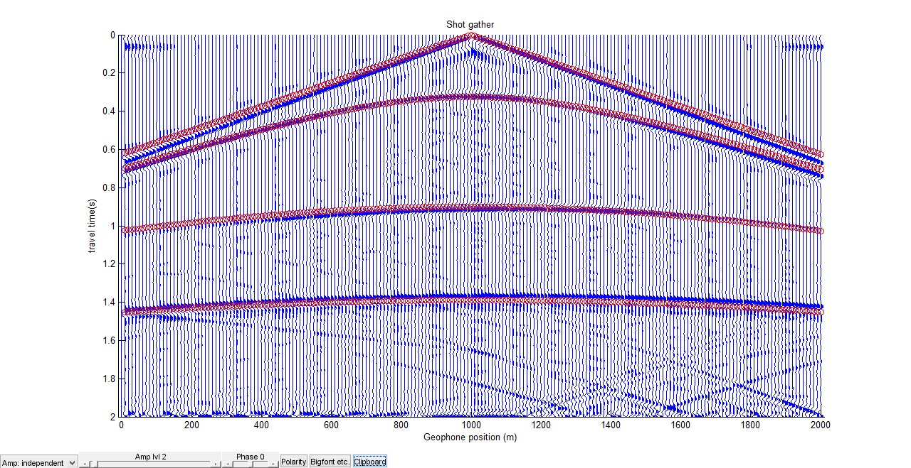

About Me
"I am a student-athlete at the University of Calgary pursying a double degree in computer science and geophysics.
I have completed my geophysics requirements and currently in my third year of computer science. My areas of interest
are in machine learning, data science, and web development."
Computer Science
My interest in computer science piqued while I was taking an introductory computer science course during
my geophysics degree. I quickly realized how applicable computer science. I found it very empowering to
have the ability to useful applications with very little capital startup.
Geophysics

I initially chose geopyysics as my first undergrad because I wanted to pursue a quantative degree
that would provide me with a strong foundation in math, physics, and a help me understand the world better.
Additionally, I chose to pursue geophysics because I felt it would allow me to travel around the world and work on
exciting projects.
Athletics
I am a sprinter on the University of Calgary Dinos Track & Field team. During the indoor season with the university
I focus on the 300m individal race and 4x200 and 4x300m relay events. During the outdoor season I specialize in the 400m
event. I am also a big Los Angeles Lakers and Dallas Cowboys fans.